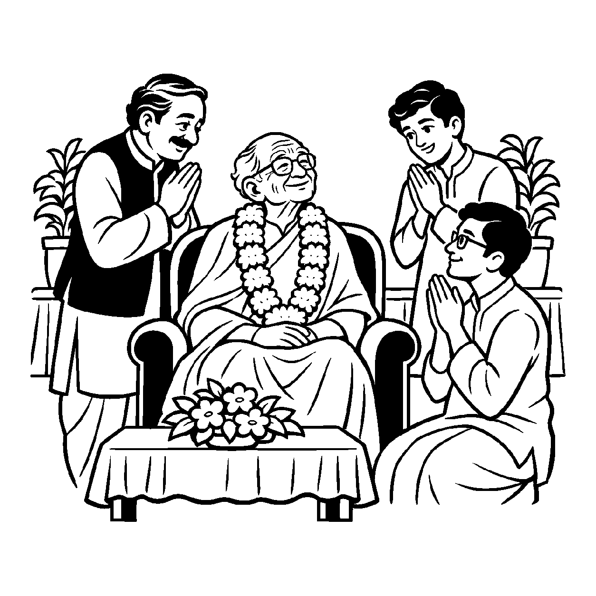

રણમેદાનમાં અનેક વિજયો અપાવ્યા પછી નિવૃત્ત થયેલો વૃદ્ધ સેનાપતિ આજે કોઈ શસ્ત્ર ધારણ કરતો નથી, છતાં રાજ્યના રાજદરબારમાં પ્રવેશતાં જ સૌ આદરપૂર્વક પોકારી ઊઠે છે: "આપણા વીર સેનાપતિ પધાર્યા!" અતીતનો ગૌરવશાળી સંકલ્પ જ્યારે વર્તમાનની વાણી અને વ્યવહારમાં જીવંત પ્રતિષ્ઠા પામે છે, ત્યારે તે 'ભૂતનૈગમ પ્રતિપાદક વ્યવહાર' બને છે.
જે ઘટના કે ઉપલબ્ધિ ભૂતકાળમાં પૂર્ણ થઈ ચૂકી છે, તે સંકલ્પને વર્તમાન ભાષા-વ્યવહારમાં જોડીને લોકવ્યવહાર પ્રવર્તાવવો તે આ નયનું કાર્ય છે. જ્ઞાનગત સ્મૃતિ માત્ર અંદર રહે છે, પરંતુ આ નય તેને શબ્દો, સંબોધનો અને સામાજિક આચરણ દ્વારા જગત સમક્ષ વ્યવહારમાં પ્રગટ કરે છે.
આ નય માત્ર જૂના લેબલો ચોંટાડવાની ઔપચારિકતા નથી, પરંતુ અતીતમાં થયેલા પુરુષાર્થ, સદ્ગુણ અને ત્યાગ પ્રત્યેની કૃતજ્ઞતાનું વચન-રૂપ છે. તે ભૂતકાળના બીજમાંથી પાકેલા વર્તમાન વટવૃક્ષના ઋણને સ્વીકારીને સંબંધો અને સંસ્કારોની પરંપરાને અખંડ જાળવી રાખે છે.
વીતી ગયેલી સિદ્ધિને, વચને કરે સજીવ;
ભૂતનૈગમ વ્યવહારથી, યશ પામે સદ્જીવ.
અતીતની શુભ સાધનાના સંસ્કારોનું સ્મરણ કરી વર્તમાન જીવનમાં ધર્મધ્યાનને દૃઢ બનાવવું.

ધનાઢ્ય શેઠ સુમતિપ્રસાદ પોતાના વિશાળ આયુર્વેદિક ચિકિત્સાલયના રજત જયંતી મહોત્સવમાં અતિ વ્યસ્ત હતા. સંસ્થાની નવી કારોબારી સમિતિના યુવા સભ્યોએ એક દરખાસ્ત મૂકી કે પચાસ વર્ષ પૂર્વે આ સંસ્થા માટે પોતાની સમગ્ર મૂડી અને જમીન અર્પણ કરી ચૂકેલા વૃદ્ધ હરિરામજી હવે કોઈ દાન આપતા નથી, તેથી મુખ્ય પ્રવેશદ્વાર પરથી તેમનું નામ હટાવીને વર્તમાન મોટા દાતાનું નામ મૂકવું જોઈએ. સુમતિપ્રસાદ ધર્મસંકટમાં મુકાયા: એક તરફ સંસ્થાનો નવો આર્થિક વિકાસ હતો અને બીજી તરફ પાયાના દાતા પ્રત્યેની કૃતઘ્નતા! યુવાનોના આગ્રહ સામે તેઓ કોઈ યોગ્ય ઉત્તર શોધી શકતા નહોતા અને મનમાં ભારે મૂંઝવણ વ્યાપી ગઈ: "આ વિવાદમાંથી બંને પક્ષને ન્યાય આપતો સન્માનજનક રસ્તો કયો?"
તે સમયે મહોત્સવમાં પધારેલા વયોવૃદ્ધ તત્વચિંતકે સુમતિપ્રસાદ અને યુવાનોને શાંતિથી સમજાવ્યા, "ભાઈઓ, ભૂતનૈગમ પ્રતિપાદક વ્યવહારને સમજો. હરિરામજી આજે ભલે દાન ન આપતા હોય, પણ અતીતમાં એમણે રોપેલા ત્યાગના સંકલ્પ-બીજ વિના આજે આ ભવ્ય વટવૃક્ષ અસ્તિત્વમાં જ ન હોત. અતીતના પુણ્યકાર્યને વર્તમાન વ્યવહારમાં વાચા આપવી એ જ સદાચાર છે." આ સાંભળતાં જ યુવાનોની આંખો ખૂલી ગઈ. તેમણે સર્વાનુમતે હરિરામજીને સ્ટેજ પર લાવી 'સંસ્થાપક પિતા' તરીકે જાહેર સન્માન કર્યું. અતીત અને વર્તમાન વચ્ચેનો મેળ બેસી ગયો અને સમગ્ર પરિસરમાં આનંદ છવાઈ ગયો.
જો આ નય કદાગ્રહ કે જડ હઠ બને, તો મનુષ્ય કેવળ ભૂતકાળના ખોટા ગૌરવ કે પૂર્વજોની સિદ્ધિઓના નશામાં જીવવા લાગે છે. વર્તમાનમાં કોઈ ગુણ કે પુરુષાર્થ ન હોવા છતાં, પૂર્વજોના નામે અહંકાર પોષવો અને નવી યોગ્યતાઓની ઉપેક્ષા કરવી એ જીવનને પતન તરફ દોરી જાય છે.
આ જ નય જ્યારે સમન્વયશીલ બને છે, ત્યારે તે પૂર્વજોના પુણ્ય, ગુણીજનોના ઉપકાર અને અતીતના સંસ્કારોને સાચવીને વર્તમાન પેઢીને પ્રેરણા આપે છે. તે ભૂતકાળમાંથી સદ્ગુણનો સાર ગ્રહણ કરીને સાધકને આત્મકલ્યાણ અને નિરાગ્રહી ધર્મસાધના તરફ અગ્રેસર કરે છે.